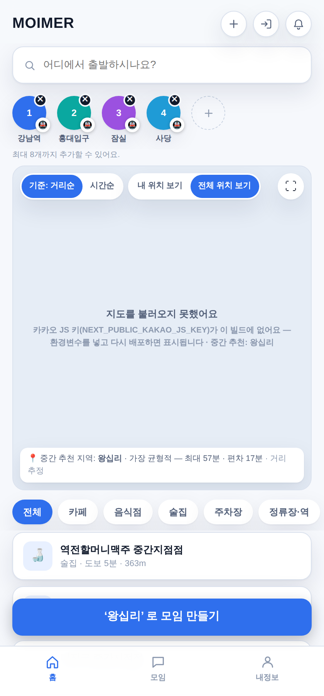
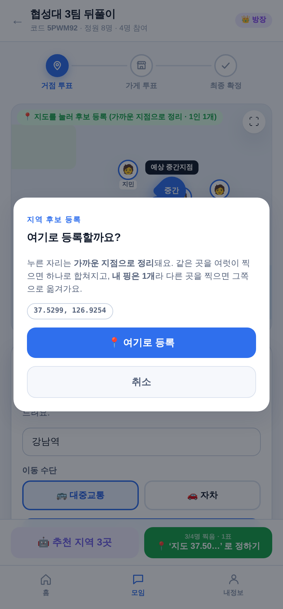

각자 다른 곳에서 출발하는 사람들이 아무도 혼자 크게 손해보지 않는 만남 장소를, 지도를 한 번 누르는 것만으로 함께 정하는 서비스
설계 화면 11개 중 9개 완성 · 브라우저 자동 테스트 78개가 지킨다
단톡방에서 “아무데나”와 “거기 멀지 않아?”가 반복된다. 정하는 사람만 피곤하고, 결국 늘 같은 곳으로 간다.
“중간”을 눈대중으로 잡으면 제일 멀리 사는 한 명이 매번 1시간을 더 쓴다. 그 사실이 숫자로 보이지 않는다.
각자 다른 이름으로 제안하니 표가 갈린다. “강남”과 “강남역”과 “역삼”이 서로 다른 후보가 된다.
우리가 푸는 것은 “지도 검색”이 아니라 “합의”다. 장소를 찾아 주는 서비스는 이미 많다. 모이머는 여러 명이 각자 다른 곳에서 출발할 때 공평한 곳을 함께 고르는 절차를 만든다.
모든 후보에 대해 가장 오래 걸리는 사람의 시간과 사람 간 편차를 계산해 보여준다. 평균이 아니라 최악을 본다 — 평균이면 3명 만족·1명 지옥인 곳이 1위가 된다.
“후보를 등록하고 → 다시 투표한다”를 한 단계로 합쳤다. 누르면 가까운 지하철역으로 정리되고, 같은 곳을 누른 사람끼리 자동으로 하나로 합쳐진다. 1인 1개.
대화는 원래 쓰던 단톡방에서 한다. 모이머는 링크 하나로 들어와 장소만 정하고 나간다. 앱 안 채팅은 만들어 두고 꺼 뒀다.
회원가입 없이 홈에서 바로 맛볼 수 있다. 출발지 2곳만 넣어도 중간지점이 나오고, 마음에 들면 그 출발지들을 그대로 들고 모임으로 넘어간다.
출발지를 넣으면 즉시 중간지점 1곳. 회원가입도 모임 생성도 필요 없다.
가장 중요한 질문 하나를 먼저 — 동네까지만 정할지, 가게까지 정할지.
입력 폼이 아니라 지도가 먼저 뜬다. 정보는 행동할 때 묻는다.
누른 자리가 가까운 역으로 정리되고 같은 곳끼리 합쳐진다.
전원을 기다리지 않는다. 후보가 부족하면 AI 추천 버튼.
걸어갈 수 있는 거리로만. 카테고리 5종 · 후보 상한 5개.
확정되면 각자 폰에 자기 경로가 그려진다. 1.8초마다 자동 동기화.
도착 신호등(갈게요/늦어요/못 가요) → 지난 모임 → 같은 멤버로 재모임.


발표에서는 노트북 1대 + 팀원 폰 3대로 실제 시연합니다. 한 사람이 지도를 누르면 나머지 3대 화면에 새로고침 없이 바로 뜹니다 — 그 장면이 이 서비스의 핵심입니다.
후보 등록 → 방장이 투표 시작 → 다시 투표 → 확정
같은 사람에게 “여기 찍어” 다음에 “이제 투표해”를 또 시킨다.
두 번째가 무엇을 위한 절차인지 설명하기 어렵다.
지도를 누른다 → 많이 찍힌 곳이 1위 → 방장이 확정
화면이 하나 줄었다. 참여자는 안 찍어도 되고, 방장은
전원을 기다리지 않고 넘어갈 수 있다.
정의는 파일 한 곳에만 있다 — 화면마다 다르게 계산되는 일이 없다
평균을 쓰면 3명은 5분, 1명은 90분인 곳이 1위가 된다. 모임에서 실제로 문제가 되는 건 가장 오래 걸리는 사람이다. 편차를 더한 것은 “다 같이 조금씩”을 “한 명만 많이”보다 낫게 보기 위해서다.
노원+의정부 모임에 종로3가를 추천한 적이 있다. 계산은 정확했다. 손으로 고른 후보 28곳에 서울 북부가 통째로 비어 있었던 것이 원인이다. 목록에 없으면 아무리 좋아도 1위가 될 수 없다.
좌표를 평균 내면 멀리 있는 한 명이 전체를 끌고 간다. 서울 7명 + 부산 1명에서 평균은 서울 41km 남쪽 충북 산속. 거리의 합을 최소화하는 기하 중앙값으로 바꾸니 서울 2km 지점.
외부 API가 “82분 · 0원 · 환승 0회”라는 빈 껍데기를 줬는데 앱이 그대로 “실시간”이라고 적은 적이 있다. 그 뒤로 정직함을 코드가 강제하게 만들었다.
출발 시각을 API에 보내지 않으므로 실제 API 값도 실시간이 아니다. “경로 기준” / “거리 추정” 두 단어로 통일.
실측 3건 + 추정 1건이 섞여 넷 다 “실시간”이던 적이 있다. 이제 한 명이라도 추정이 섞이면 배지가 바뀐다.
데모용 4.3~4.7을 삭제하고 0 = “정보 없음”이라는 규약을 세웠다. 별이 없으면 안 그린다.
지도의 경로선이 직선 근사면 점선으로 그리고 그렇다고 적는다. 결과 버튼도 “예약하기”가 아니라 “메뉴 보기”다.
키가 하나도 없어도 전체 흐름이 끝까지 돈다. 외부 API 4종 모두 대체 동작을 갖고 있고, 팀원은 키 없이 개발·시연할 수 있다. 다만 대체 동작으로 나온 값은 절대 실제인 척하지 않는다 — 이 두 가지가 같이 지켜져야 의미가 있다.
| 화면 | Next.js 14 App Router · TypeScript · 순수 CSS |
| 상태 | useState + 1.8초 폴링 (상태관리 라이브러리 없음) |
| 서버 | Next API Routes · 창구 1곳으로 동작 29종 |
| DB | Neon (PostgreSQL) · 키 없으면 인메모리로 자동 전환 |
| 외부 | 카카오맵/로컬 · ODsay(대중교통) · TMAP(자차) |
| 배포 | PWA → 안드로이드 APK (지금 웹앱이 그대로 앱이 된다) |
공용 파일 10개는 통합 담당자 소유(GitHub이 리뷰를 강제). 한 파일 400줄 상한. 기능 스위치는 상수가 아니라 환경변수로 — 브랜치마다 값이 달라지면 합칠 때마다 그 줄에서 충돌난다.
타입검사도 빌드도 통과했는데 모임 화면이 통째로 하얗게 뜬 적이 있다. 그 사고 하나가 이 프로젝트의 검증 원칙 “눈 · 버튼 · 로그 3관점”을 만들었다.
타입검사 → 빌드 → 실제 브라우저로 클릭. 커밋 전 관문. 개발 서버가 아니라 빌드 결과물을 띄운다.
PR마다 스위치 끈 판 / 켠 판 2벌을 돌린다. 안 돌려보는 기능은 “켤 수 있어 보이는 죽은 코드”다. 키를 일부러 안 넣는다 — “키 없이도 돈다”가 규칙이라서.
브라우저 4개를 독립된 기기로 띄워 발표 시나리오를 통째로 리허설. “후보가 하나라도 생겼으면 통과”가 아니라 4명이 각자 등록됐는가를 센다.
그 검증이 정말 잡는지도 확인했다. 일부러 화면을 깨뜨리고 돌린 출력이 문서에 남아 있다 — “✓ 빌드 통과 / ✘ 브라우저 테스트만 실패”
설계서가 곧 테스트 목록이다. 설계 문서의 조항 번호를 테스트 이름에 그대로 달았다 — “§4-⑤ 정원 8명, 9번째는 입장 거부”
두 사람이 같은 순간에 투표하면 나중에 저장된 쪽이 앞선 쪽을 통째로 덮어썼다. 원인 — 모임 정보를 DB 한 행에 통째로 담았다. 해결 — 저장 단위를 모임 / 참가자 / 표 한 장 셋으로 쪼개고, “1인 1표”를 DB 기본키가 강제하게 했다. 그때까지 테스트가 전부 “한 명이 순서대로”만 봤다는 것도 함께 드러나 4명이 동시에 쏘는 테스트를 따로 만들었다.
지도 SDK 로드가 실패한 기기에서는 “지도를 탭해 핑 찍기”가 불가능해 참여할 방법이 아예 없었다. 원인 — 서버가 후보를 자동으로 깔아 줘서 그 사실이 가려져 있었다. 해결 — 대체 지도에서 누른 자리를 좌표로 되돌리는 역함수를 만들어 SDK 없이도 핑을 찍게 했다.
리허설에서 4대로 돌리니 늦게 합류한 사람의 계산이 끝나지 않았다. 원인 — 유료 API를 아끼려 250ms 간격 대기열을 뒀는데 기기마다 재계산을 요청했다 (후보3 × 인원4 × 기기4 = 48건 → 12초 이상). 해결 — 같은 구간은 한 번만 계산해 결과를 같이 쓰고, 재계산 요청은 방장 화면만 보낸다. 이 버그는 브라우저 4개를 동시에 띄워야만 재현됐다.
원인 — React 훅을 조건부 return 아래에 뒀다. 문법도 타입도 완벽히 맞지만 특정 조건에서 화면이 안 나온다. 해결 — 규칙을 문서 3곳에 못 박고 도구가 잡게 했다(ESLint). 실제 브라우저 테스트를 커밋 관문에 넣고, 일부러 깨뜨려 그 테스트가 잡는 것까지 확인했다.
이번 주에 찾은 버그다. 거절 경로는 저장을 하지 않는데, 인메모리 모드에서는 이미 손댄 데이터가 그대로 남아 거절당했는데 내 표만 증발했다. 해결 — 상한 검사를 데이터를 건드리기 전으로 옮겼다. 역 스냅을 켜면 후보가 잘게 갈려 이 경로를 실제로 밟기 때문에 지금 고쳐야 했다.
카카오는 같은 역을 노선마다 따로 준다 — “사당역 2호선” / “사당역 4호선”. 후보 병합은 이름 일치로 판정하므로 그대로 두면 2호선 쪽과 4호선 쪽을 누른 사람이 다른 후보가 된다 — 표를 모으려던 기능이 표를 쪼갠다. 해결 — 노선 꼬리를 떼는 정리를 넣고, 키가 있는 기계에서만 검증되는 계약이라 전용 점검 스크립트를 따로 만들어 확인했다.
| 멘토 지적 | 어떻게 반영했나 | 상태 |
|---|---|---|
| 방장/참여자 화면이 섞여 있다 구현 시 꼬일 가능성 높음 |
“누가 무엇을 할 수 있는가”를 표 한 곳으로 모았다(그전엔 8개 파일 39군데에 흩어져 있었다). 참여자에게 방장 버튼은 비활성이 아니라 아예 없다. | 완료 |
| 핑 등록 = 투표로 통합 | 지역이 한 칸으로 줄었다. 표의 출처가 투표 행에서 핑 그 자체로 바뀌었다. 옛 2단계는 스위치로 되살릴 수 있다. | 완료 |
| 핑을 시·군·구로 묶기 또는 서울은 지하철역 기준 |
기본은 시·군·구, 지하철역 묶기는 스위치로 제공. 실 키로 병합까지 확인 완료(2026-08-11). | 완료 |
| 링크 진입 때 정보를 먼저 묻지 말 것 핑 찍은 후 모달로 수집 |
링크를 열면 지도가 먼저 뜬다. 지도를 누르는 순간 이름·출발지를 묻고 참여와 핑이 한 번에 끝난다. | 완료 |
| 결과 화면에서 끝나지 않게 | 결과에서 되돌리기 / 재투표가 가능하다. 되돌리기는 표를 지키고, 재투표는 후보를 두고 표만 지운다 — 정반대의 두 동작을 구분했다. | 완료 |
| AI는 버튼으로, 자동이 아니라 | 서버가 후보를 자동으로 깔던 것을 철거했다. 후보는 사람이 찍은 핑과 방장이 누른 추천 버튼으로만 생긴다. | 완료 |
| 카카오톡 알리기 | 지금은 결과 화면 한 곳에만 있다. 이벤트마다(지역 확정·투표 시작) 상시화가 남았다. | 남음 |
바꾼 동작은 전부 기능 스위치 뒤에 뒀다 — 발표 중 문제가 생기면 환경변수 한 줄로 옛 동작으로 되돌아간다.
이번 주에 닫은 것 — 지하철역 묶기 실 키 검증(2026-08-11), 후보 상한 롤백 버그, 홈/핑 후보 이름 불일치. 마지막 미확인 위험이 사라졌다.
개발 환경에는 외부 API 키가 없어 이동시간이 전부 “거리 추정”으로 나온다. 지하철역 이름 형식처럼 키가 있는 기계에서만 확인되는 계약도 있다 — 자동 검사에서는 대체 경로만 밟기 때문에 틀려도 전부 초록불이 된다.
그래서 그것만 확인하는 스크립트를 따로 만들어 학교 노트북에서 실행해 통과를 확인했다. 다만 “CI가 자동으로 지켜 주는 것”은 아니라는 점을 분명히 해 둔다.
도시간 장거리의 “역까지 가는 시간” 보정식이 실측 대비 약 1.7배 과대하다는 것도 주석에 그대로 적어 뒀다 — 정확하진 않지만 0분보다는 진실에 가깝다는 판단이다.
“AI가 엉뚱한 곳을 고치고 두 사람이 동시에 만지면 충돌난다”는 이유로 한 파일 400줄 상한을 정했는데 8개 파일이 이를 넘었다 (가장 큰 것 1,799줄).
설계가 요구한 “모임 생성 시 카카오 로그인 필수”도 아직 적용되지 않아 이름만 있으면 만들 수 있다. 작업 메모의 “남은 일” 목록도 낡아서 이미 끝난 항목이 아직 ‘안 함’으로 적혀 있는 것을 이번에 발견했다.
기록을 남기는 규칙은 지켰지만, 기록을 갱신하는 규칙은 놓쳤다. 이건 사람이 아니라 절차로 막아야 한다고 보고 있다.
이 슬라이드를 넣은 이유 — 이 프로젝트에서 배운 가장 큰 것이 “되는 것처럼 보이는 것”과 “되는 것”은 다르다는 점이라서, 발표 자료에서도 같은 기준을 지키는 것이 맞다고 판단했습니다.
출발지를 넣고 · 지도를 한 번 누르고 · 방장이 확정한다.
그 사이의 모든 계산과 합의 절차를 모이머가 맡습니다.
AI 부트캠프 3팀 · moimer v0.2.0 · 2026.08.11